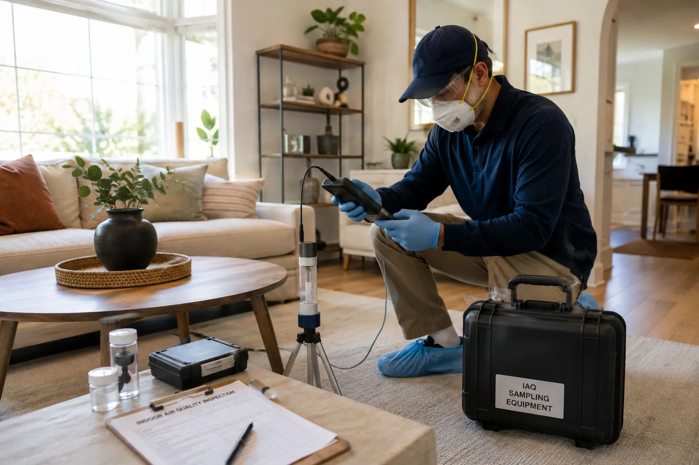
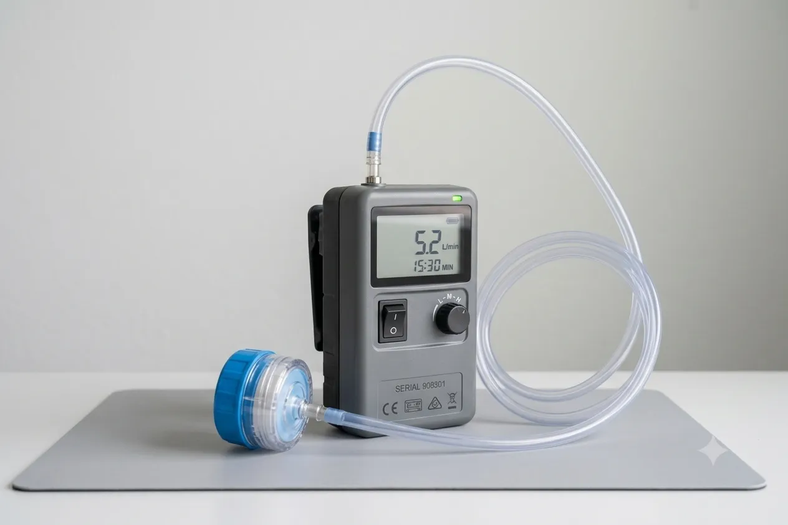

Professional Indoor Air Quality Investigation Services
California Building Environment provides independent indoor air quality (IAQ) assessments for residential, commercial, industrial, educational, healthcare, and government facilities throughout Southern California.
Our evaluations include visual inspections, environmental assessments, and professional sample collection when appropriate. Samples (spore traps, viable impaction, VOC canisters, formaldehyde badges, particulate monitors) are submitted to AIHA-LAP, LLC and/or ELAP-accredited laboratories for analysis.
Helping Identify Environmental Factors Affecting Indoor Air
Indoor air quality concerns can arise from a variety of environmental conditions, including moisture intrusion, inadequate ventilation, particulate matter, microbial growth, construction activities, or other building-related issues.
Our inspections evaluate the building environment, document observations, and collect representative samples when appropriate. Sampling may include: total/viable fungal spores (spore traps, Andersen impactors), volatile organic compounds (TO-15 canisters, sorbent tubes), formaldehyde (NIOSH 2016/3500), particulate matter (PM2.5/PM10 real-time and gravimetric), carbon dioxide, carbon monoxide, temperature, and relative humidity. Laboratory analysis is performed by AIHA-LAP, LLC and ELAP-accredited laboratories. Findings are summarized in a detailed inspection report with source identification, exposure pathway assessment, and mitigation recommendations referencing ASHRAE 62.1, EPA IAQ Tools for Schools, and ACGIH guidelines.
Because we do not perform remediation services, our assessments remain independent and objective.

Common Reasons to Request an Indoor Air Quality Assessment
IAQ assessments are recommended when occupants report building-related symptoms, after water intrusion or remediation, during commissioning or renovation, for regulatory compliance (OSHA, Cal/OSHA, Title 24), and to establish baseline conditions for high-occupancy or sensitive-use facilities.
Occupant Health Complaints / SBS
When building occupants report headaches, fatigue, respiratory irritation, or other symptoms that improve upon leaving the building (Sick Building Syndrome), an IAQ assessment identifies potential contributors: ventilation deficits, chemical sources, microbial amplification, or particulate matter.
Water Damage & Post-Remediation
Following plumbing leaks, flooding, or roof leaks, IAQ assessments evaluate whether moisture has driven microbial growth or released contaminants. Post-remediation verification confirms acceptable airborne spore levels and moisture content.
Ventilation & HVAC Performance
Inadequate outdoor air delivery, filtration deficiencies, duct contamination, or pressurization imbalances can degrade IAQ. Assessments measure CO₂, airflow rates, filter efficiency, and supply/return balance per ASHRAE 62.1.
Construction & Renovation
New construction, tenant improvements, and renovation activities introduce VOCs, dust, and combustion byproducts. Baseline and post-occupancy IAQ testing documents conditions for LEED, WELL, or owner requirements.
Commercial & Institutional Facilities
Office buildings, schools, healthcare facilities, and industrial properties benefit from periodic IAQ evaluations to support occupant health, productivity, and regulatory compliance (OSHA General Duty Clause, Cal/OSHA Title 8).
Real Estate Transactions
Commercial and residential property transactions may include IAQ assessments to identify environmental liabilities, verify ventilation adequacy, and support due diligence for buyers, lenders, and insurers.
Post-Remediation Verification
Following environmental remediation by another contractor, an independent IAQ assessment documents current conditions through visual inspection, moisture verification, and targeted sampling to confirm remediation effectiveness.
Our Indoor Air Quality Assessment Process
Consultation
Discuss the property, occupant concerns, project objectives, and areas to be evaluated.
On-Site Assessment
Perform a visual inspection of the property and evaluate building conditions that may influence indoor air quality.
Sample Collection
When appropriate, representative environmental samples are collected and submitted to accredited laboratories for analysis.
Inspection Report
Laboratory findings and inspection observations are documented in a detailed report to support informed decision-making.

Common Indoor Environmental Conditions We Evaluate
Every assessment is customized to the property and project objectives. Common areas of evaluation include:
- Indoor air quality conditions
- Ventilation systems
- HVAC equipment
- Moisture intrusion
- Visible microbial growth
- Water-damaged materials
- Relative humidity
- Temperature conditions
- Building envelope observations
- Construction-related dust
- Particulate concerns
- Occupant concern areas
- Air sample locations (when appropriate)
- Surface sample locations (when appropriate)
How to Decide Which Service You Need
Both services evaluate the indoor environment, and the right choice depends on what you are trying to find out. Here is how they differ:
Your concern is specifically mold or moisture
A mold inspection is the right fit when there is visible mold growth, a musty odor, a known water leak or flooding event, or you are preparing to buy or sell a property and want to document mold-related conditions. The inspection focuses on identifying microbial growth and moisture problems, and sampling is used to identify and quantify mold present.
Your concern is broader indoor air quality
An IAQ assessment is the right fit when the concern is general occupant comfort or health — odors, ventilation, dust, temperature, humidity, or conditions after construction activity — rather than mold specifically. The assessment covers a wider range of potential contributors to the indoor environment.
Not sure which applies? Describe your situation in a quote request and we will recommend the appropriate inspection.
Indoor Air Quality FAQs
Do you perform laboratory testing?
No. California Building Environment performs the inspection and collects representative environmental samples when appropriate. Samples are submitted to accredited laboratories for analysis, and laboratory results are included in the final report.
Do you perform remediation or restoration?
No. We provide independent environmental inspections and consulting only. Because we do not perform remediation or restoration services, our findings remain objective and unbiased.
Will every indoor air quality assessment require sampling?
Not necessarily. Every property is different. Depending on the inspection findings and your project goals, a visual assessment alone may be appropriate, while other situations may warrant air or surface sample collection.
How long does an indoor air quality assessment take?
The duration depends on the size of the property, accessibility, and the scope of the investigation. Residential assessments are typically shorter than large commercial or industrial projects.
When will I receive my report?
Once laboratory analysis is complete, we prepare a detailed report documenting inspection observations, sampling locations, laboratory findings, and recommendations when applicable.
Standards and Guidelines
Indoor air quality assessments follow established standards and guidelines from federal and state agencies:
- EPA Indoor Air Quality — The EPA provides comprehensive guidance on indoor air quality assessment, ventilation, and contaminant control.
- NIOSH Indoor Air Quality — The National Institute for Occupational Safety and Health publishes criteria for indoor air quality in workplace environments.
- Cal/OSHA Ventilation Standards — California OSHA requirements for workplace ventilation and air quality.
Do I Need an Indoor Air Quality Assessment?
Check if any of these apply to your property:
If you checked one or more, an indoor air quality assessment may help.
Request an AssessmentRequest a Quote
Schedule an Indoor Air Quality Assessment
California Building Environment provides independent indoor air quality assessments, environmental inspections, professional sample collection, and consulting throughout Southern California.